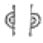
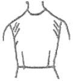
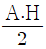
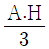
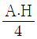
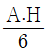
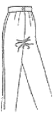
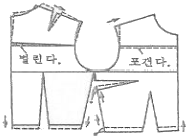

양장기능사 (2009-07-12 기출문제)
1과목: 임의 구분
1. 2장의 겹쳐진 천은 서로 포개어 겹쳐있고, 이 때의 겹쳐진 양은 땀을 유지시키거나 봉합하는데 충분한 양이 되도록 봉합시킨 시임(seam)은?(오류 신고가 접수된 문제입니다. 반드시 정답과 해설을 확인하시기 바랍니다.)
- 슈퍼임포즈 시임
- 랩 시임
- 바운드 시임
- 플랫 시임
(정답률: 21%)

2. 체형의 분류 중 상체가 곧고 가슴이 솟아 있으며 엉덩이는 풍만하고 배가 평편한 자세는?
- 굴신체
- 반신체
- 후경체
- 후신체
(정답률: 92%)
3. 긴 소매 블라우스의 옷감 필요량으로 옳은 것은?
- 너비 150cm일 때 120~130cm
- 너비 150cm일 때 170~200cm
- 너비 110cm일 때 120~130cm
- 너비 110cm일 때 170~200cm
(정답률: 74%)
4. 편성을 봉제에 주로 이용이 되며 봉제와 동시에 시접정리까지 되는 재봉기 명칭은?
- 안전봉 재봉기
- 본봉 재봉기
- 오버록 재봉기
- 장님봉 재봉기
(정답률: 10%)
5. 다음 부호 중 맞춤 표시에 해당되는 것은?

(정답률: 91%)
6. 옷본의 배치방법으로 옳은 것은?
- 일반적으로 패턴에 옷감의 결의 방향은 표시하지 않는다.
- 옷감의 안쪽에 옷본을 배치한다.
- 패턴은 작은 것부터 배치한다.
- 털이 긴 옷감은 털의 결방향이 위로 향하도록 배치한다.
(정답률: 78%)
7. 여성복의 기본 원형이 아닌 것은?
- 길
- 소매
- 스커트
- 원피스
(정답률: 97%)
8. 다음 중 시접량이 가장 적은 것은?
- 스커트단
- 목둘레
- 블라우스단
- 지퍼다는 곳
(정답률: 96%)
9. 가름솔 바느질 방법 중 안감을 넣지 않고 재킷이나 블라우스의 시접 처리법에 해당되는 것은?
- 핑킹가위로 처리하는 방법
- 오버록으로 처리하는 방법
- 지그재그로 처리하는 방법
- 바이어스 테이프로 처리하는 방법
(정답률: 66%)
10. 다음 중 마틴(Martin)식 인체계측기로만 나열된 것은?
- 신장계, 간상계, 측각계
- 각도계, 활동계, 직접계
- 신장계, 직접계, 마틴계
- 직접계, 신장계, 각도계
(정답률: 100%)
11. 제조원가의 3요소가 아닌 것은?
- 인건비
- 관리비
- 재료비
- 제조경비
(정답률: 94%)
12. 다음 그림과 같이 진동 둘레에 사선의 군주름이 생길 때에 관한 보정 방법으로 옳은 것은?

- 목둘레선을 높여 앞뒤판을 맞춘다.
- 어깨선을 군주름 분량만큼 시침 보정하여 내려주고 어깨 처진 만큼 진동 둘레 밑부분도 내려 준다.
- 어깨선을 올려서 보정하고 진동둘레 밑부분도 올려준다.
- 목둘레가 좁은 경우이므로 목둘레선을 파 준다.
(정답률: 74%)
13. 실표뜨기의 설명으로 틀린 것은?
- 두 장의 직물에 패턴의 완성선을 표시할 때 사용하는 방법이다.
- 2올의 면사로 완성선을 표시한다.
- 겉으로는 길게 사건으로 실이 나타나며 안으로는 짧은 땀이 나타난다.
- 두 장의 옷감 사이를 벌려가면서 실땀을 잘라 준다.
(정답률: 82%)
14. 마 심지의 특성이 아닌 것은?
- 신축성이 작고 단단하다.
- 적당한 드레이프성이 있다.
- 신사복용 심지에 잘 어울린다.
- 강도가 크고 형태안정성이 우수하다.
(정답률: 77%)
15. 부분 바느질의 단처리법이 아닌 것은?
- 새발뜨기
- 팔자뜨기
- 감치기
- 공그르기
(정답률: 75%)
16. 테일러링 재킷의 칼라와 라펠의 심지를 부착시킬 때에 사용하고, 재킷의 모양을 오랫동안 변화 없이 유지시키기 위해서 이용되는 바느질은?
- 어슷시침
- 반박음질
- 팔자뜨기
- 실표뜨기
(정답률: 69%)
17. 재킷의 한 장 소매를 가봉하는 방법으로 틀린 것은?
- 소매의 다트를 접어 상침한다.
- 소매단을 접어서 상침 시침한다.
- 소매의 진동둘레를 오그린다.
- 소매의 밑 소매와 위쪽 소매릐 시접을 대고 상침 시침한다.
(정답률: 53%)
18. 체형의 치수재기를 할 때 측정 부위에 따른 방법으로 옳은 것은?
- 엉덩이 길이-의자에 앉아 옆 허리선에서 의자 바닥까지의 길이를 잰다.
- 밑위 길이-허리 둘레선의 옆 중심선부터 엉덩이 둘레선까지의 길이를 잰다.
- 등 길이-목뒷점부터 허리 둘레선까지의 길이를 잰다.
- 어깨 길이-양쪽 어깨점 사이의 거리를 잰다.
(정답률: 75%)
19. 다음 중 봉제용 제도 용구가 아닌 것은?
- 직각자
- 줄자
- 롤렛
- 가위
(정답률: 48%)
20. 재봉기의 실재기 운동 중 방식이 다른 하나는?
- 캠 실체기
- 회전 실채기
- 링크 실채기
- 슬라이드 실채기
(정답률: 46%)
2과목: 임의 구분
21. 다음 소매산 높이 중에서 가장 활동하기 편한 것은?




(정답률: 91%)
22. 손바느질 중에서 가장 튼튼하게 처리되는 것은?
- 반박음질
- 박음질
- 한올 박음질
- 홈질
(정답률: 81%)
23. 너비 110cm의 옷감으로 반소매 블라우스를 만들 때 필요한 옷감량의 계산법은?
- 블라우스 길이 + 시접
- 블라우스 길이 + 칼라너비 + 시접
- (블라우스 길이×2) + 시접
- (블라우스 길이×2) + 소매길이
(정답률: 69%)
24. 다음 부호 중 엉덩이 둘레선을 의미하는 것은?
- B.P
- B.L
- W.L
- H.L
(정답률: 85%)
25. 슬랙스의 앞중심 밑위선 부위에서 방사선 모양으로 생긴 주름의 보정 방법으로 가장 옳은 것은?

- 옆선에서 밑위선 부분을 넓혀준다.
- 앞 밑위 부분과 밑아래 부분의 길이를 늘려 준다.
- 밑위선은 내려 주고, 밑아래 부분의 길이는 줄여준다.
- 밑위선은 올려주고, 밑위 부분의 길이를 넓혀준다.
(정답률: 71%)
26. 시착시 일반적인 관찰 사항으로 틀린 것은?
- 허리선ㆍ밑단이 수직으로 놓였는가
- 전체적인 실루엣이 알맞은가
- 옷감의 올이 바로 놓였는가
- 옆선ㆍ어깨선이 중앙에 놓이게 되었는가
(정답률: 48%)
27. 다음 그림은 어떤 체형을 보정한 제도인가?

- 가슴이 큰 체형
- 비만 체형
- 등이 굽은 체형
- 마른 체형
(정답률: 85%)
28. 피계측자에게 직접 기구를 대지 않고, 인체를 사진에 기록하여 필요한 치수와 형태를 파악하는 간접 계측법에 해당하는 것은?
- 실루엣터법
- 마틴식법
- 퓨즈법
- 피하지방법
(정답률: 96%)
29. 다음 중 플랫 칼라의 종류가 아닌 것은?
- 세일러 칼라
- 피터팬 칼라
- 스탠드 칼라
- 프릴 칼라
(정답률: 70%)
30. 다음 중 바이어스(bias)로 재단해야 하는 스커트는?
- 고어 스커트
- 플리츠 스커트
- 플레어 스커트
- 개더 스커트
(정답률: 90%)
31. 다음 섬유중 비중이 가장 적은 것부터 높은 순서대로 나열된 것은?
- 나일론-면-양모
- 양모-면-나일론
- 면-양모-나일론
- 나일론-양모-면
(정답률: 90%)
32. 다음 섬유 중 안전 다림질 온도가 가장 높은 것은?
- 아세테이트
- 아크릴
- 아마
- 견
(정답률: 88%)
33. 정련견은 생사 중 어떤 성분을 용해시킨 것인가?
- 케라틴
- 카제인
- 피브로인
- 세리신
(정답률: 67%)
34. 복합 섬유를 만드는 목적으로 옳은 것은?
- 강신도 증가
- 내구성 증가
- 대전방지성 증가
- 벌키성 증가
(정답률: 35%)
35. 양모섬유의 표면에 해당되는 것은?
- 파라 내섬유
- 오르토 내섬유
- 스케일층
- 모수
(정답률: 77%)
36. 부가중합에 의해 만들어지는 합성섬유가 아닌 것은?
- 폴리아크릴계
- 폴리프로필렌계
- 폴리에스테르계
- 폴리비닐알콜계
(정답률: 50%)
37. 비스코스레이온 제조에 있어서 숙성공정이 필요한 이유는?
- 정도를 감소시키기 위해서
- 물에 녹지 않도록 하기 위해서
- 방사시 산에 잘 녹도록 하기 위해서
- 점도와 용해도를 증가시키기 위해서
(정답률: 50%)
38. 다음 중 3대 합성섬유를 나열한 것으로 옳은 것은?
- 면, 마, 양모
- 폴리에스테르, 아크릴, 나일론
- 폴리우레탄, 비스코스레이온, 나일론
- 면, 견, 나일론
(정답률: 79%)
39. 섬유의 흡습성이 적은 경우와 관계가 없는 것은?
- 투습성이 나쁘다.
- 염색성이 나쁘다.
- 섬유표면에 정전기가 축적된다.
- 건조 속도가 느리다.
(정답률: 72%)
40. 다음 중 섬유의 결정부분이 부여하는 성질에 해당되는 것은?
- 내열성
- 염색성
- 유연성
- 흡승성
(정답률: 13%)
3과목: 임의 구분
41. 다음 중 순수, 청결, 소박, 순결의 느낌을 주는 색은?
- 흰색
- 빨강
- 자주
- 검정
(정답률: 88%)
42. 흰색 벽을 배경으로 했을 때 가장 눈에 잘 띄는 의복의 색상은?
- 진한 파랑
- 진한 노랑
- 연한 연두
- 연한 녹색
(정답률: 90%)
43. 심장기관에 도움을 주며, 신체적 균형을 유지시켜 주고, 혈액순환을 돕고, 교감신경 계통에 영향을 주는 색은?
- 녹색
- 파랑
- 노랑
- 빨강
(정답률: 87%)
44. 색의 대비효과에 대한 설명으로 옳은 것은?
- 안료를 혼합할 때 밝은 회색이 되는 두 색을 한난 관계에 있다고 한다.
- 명도대비가 강하면 선명하고 산뜻하고 명쾌한 느낌을 받게 된다.
- 채도대비를 하면 서로의 영향을 받아 채도가 높은 색은 더 낮게 보이게 된다.
- 면적대비를 할 때 면적이 커지면 그 색은 실제보다 더 명도와 채도가 감소되어 보인다.
(정답률: 73%)
45. 도안에서 율동감을 나타낼 수 있는 방법으로 옳은 것은?
- 색이나 형의 반복에 의하여 만들어 준다.
- 균제적인 균형을 만들어 준다.
- 일부분을 특히 강조해 준다.
- 공간 설정을 조화있게 만들어 준다.
(정답률: 76%)
46. 색의 3요소에서 우리들의 눈에 가장 민감하게 작용되는 것은?
- 색상
- 명도
- 채도
- 순도
(정답률: 50%)
47. 다음 중 경쾌한 느낌이 나타나는 선은?
- 사선
- 수평선
- 수직선
- 곡선
(정답률: 64%)
48. 의복에서 파랑과 녹색의 색채를 조화시키는 방법은?
- 보색조화
- 동일색상조화
- 3각조화
- 인접색상조화
(정답률: 75%)
49. 두 개 이상의 색광이나 색료 등을 서로 혼합하여 다른 색채 감각을 일으키는 것은?
- 색혼합
- 잔상
- 동화
- 대비
(정답률: 90%)
50. 비교적 자극이 강한 색을 사용해도 양호한 장소는?
- 사무실
- 교실
- 병실
- 현관
(정답률: 90%)
51. 다음 그림의 조직에 대한 설명으로 틀린 것은?
- 드레스, 안감용으로 쓰인다.
- 경표면 능직이다.
- 마찰에 강하고 저항성이 있다.
- 데님 등이 이에 속한다.
(정답률: 80%)
52. 속옷, 양말, 침구 등에 특히 요구되는 가공은?
- 대전방지가공
- 방염가공
- 위생가공
- 방수가공
(정답률: 84%)
53. 평직의 특징이 아닌 것은?
- 3원조직 중에서 가장 간단한 조직이다.
- 튼튼하고 마찰에 강한 조직이다.
- 구김이 잘 생기고 광택이 적다.
- 표면과 이면이 다른 조직이다.
(정답률: 85%)
54. 직물의 직조시 개구를 통하여 위사를 투입하는 역할을 하는 것은?
- 증광
- 바디
- 북
- 직물빔
(정답률: 55%)
55. 다음 중 부직포의 특성으로 틀린 것은?
- 방향성이 없다.
- 함기량이 적다.
- 절단부분이 풀리지 않는다.
- 직물에 비해 강도가 부족하다.
(정답률: 69%)
56. 다음 중 광택이 가장 우수한 직물은?
- 공단
- 옥양목
- 데님
- 서지
(정답률: 72%)
57. 다음 중 광택을 표현하는 소재로 적당한 것은?
- 물실크
- 면 스웨이드
- 데님
- 스폰지
(정답률: 96%)
58. 다음 중 형태고정가공에 해당되지 않는 것은?
- 퍼머넌트 프레스(permanent press) 가공
- 듀어러블 프레스(durable press) 가공
- 샌포라이즈(sanforized) 가공
- 워시앤드웨어(wash and wear) 가공
(정답률: 58%)
59. 드라이클리닝의 장점이 아닌 것은?
- 세탁물의 변형이 거의 없다.
- 건조가 빠르고 손질이 간편하다.
- 친수성 오점의 제거가 용이하다.
- 클리닝 중에 다른 염색된 옷으로부터 재오염이 없다.
(정답률: 58%)
60. 면이나 마섬유 등의 염색에 주로 사용되는 염료는?
- 직접염료
- 산성염료
- 분산염료
- 염기성염료
(정답률: 66%)